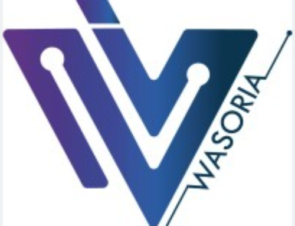

En cours
DAQ 2.0
Dispositif en Amont à la Qualification
APOR, Le Creusot
Parcours · Career Log
Dix ans d'infrastructure et de support informatique, prolongés par un Master en Vision par Ordinateur et l'ingénierie d'IA embarquée. Voici le journal détaillé — entreprises, formations et compétences.
IT / Infra
Vision Ordi.
Détection
Inférence Jetson
Engagement web
01 — Expériences
4 postes · du support N3 à la distillation de Vision Transformers.
Oct 2024 – Nov 2024 · Chalon-sur-Saône

Fév 2024 – Juil 2024 · Le Creusot
Janv 2013 – Fév 2023 · Ikoyi, Lagos
Oct 2011 – Sept 2012 · Ikeja, Lagos
02 — Formation
Dispositif en Amont à la Qualification
APOR, Le Creusot
Juillet 2024
Université de Bourgogne, Le Creusot
Mai 2015
University of Lagos
Certification
Google · 2024
03 — Compétences
Disponible pour un entretien
Toutes les expériences, formations et compétences détaillées dans un document prêt à partager.